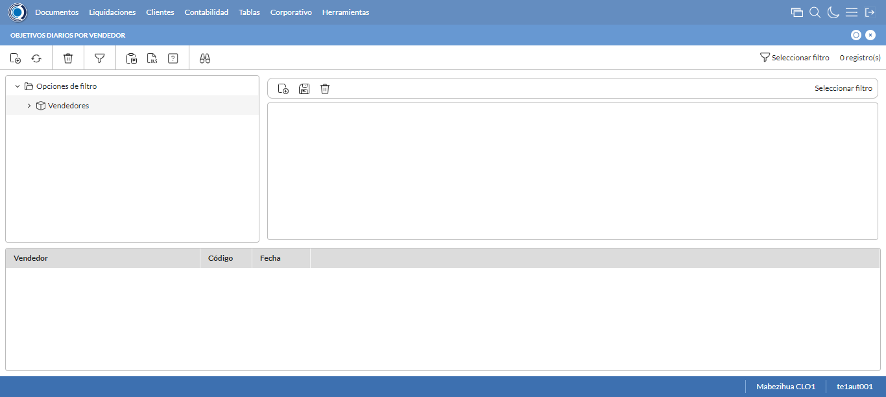
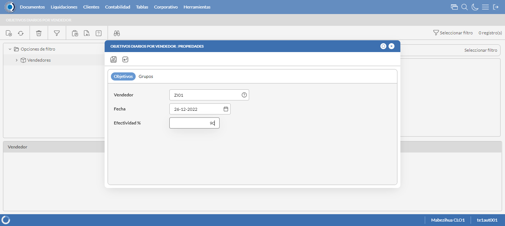
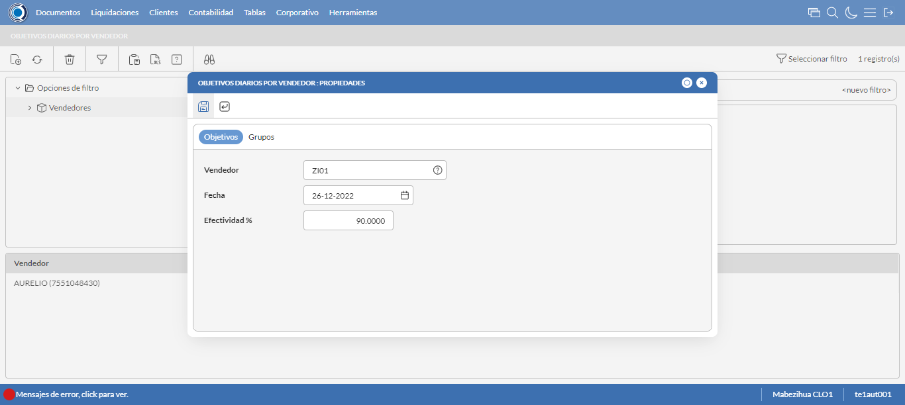
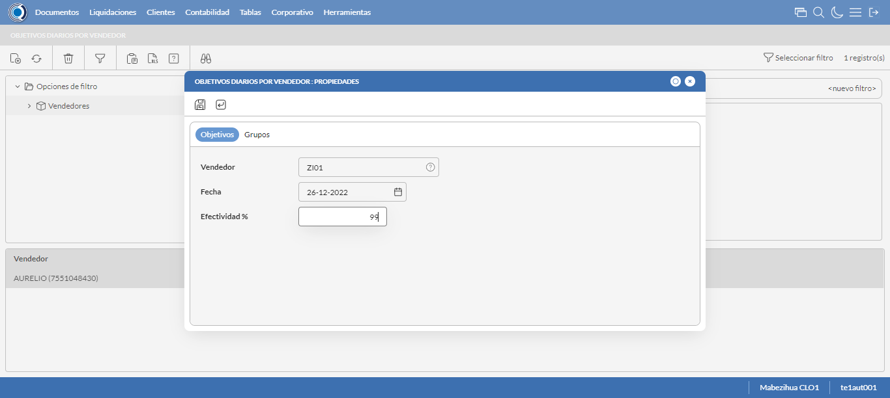
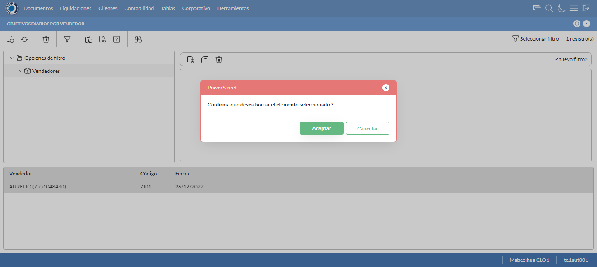

Desarrollado por : Area de Testing PWST
Fecha y hora de inicio : 2022-12-26 13:44:26
Duracion : 0:01:09.691979
Resultado : Total 8，Correctos 7 ，Errores 1 ，Taza de resultado 87.50%
Resumen 87.50% Errores 1 Fallidos 0 Correctos 7 Test realizados 8
| Caso de Prueba | Total | Correctos | Fallido | Error | Detalles | Captura del error |
| ObjetivosDiarios2.Test: Escenario 1 de Autorizaciones de Credito | 8 | 7 | 0 | 1 | Detalles | |
test |
ft1_1: 2022-12-26 13:44:28,290 - root - INFO - Se abre el chrome
2022-12-26 13:44:29,528 - root - INFO - Entra a la URL
2022-12-26 13:44:29,667 - root - INFO - Maximiza la pantalla
Traceback (most recent call last):
File "C:\Users\pwst\AppData\Local\Programs\Python\Python311\Lib\site-packages\selenium\webdriver\remote\switch_to.py", line 88, in frame
frame_reference = self._driver.find_element(By.ID, frame_reference)
^^^^^^^^^^^^^^^^^^^^^^^^^^^^^^^^^^^^^^^^^^^^^^^^^
File "C:\Users\pwst\AppData\Local\Programs\Python\Python311\Lib\site-packages\selenium\webdriver\remote\webdriver.py", line 861, in find_element
return self.execute(Command.FIND_ELEMENT, {"using": by, "value": value})["value"]
^^^^^^^^^^^^^^^^^^^^^^^^^^^^^^^^^^^^^^^^^^^^^^^^^^^^^^^^^^^^^^^^^
File "C:\Users\pwst\AppData\Local\Programs\Python\Python311\Lib\site-packages\selenium\webdriver\remote\webdriver.py", line 444, in execute
self.error_handler.check_response(response)
File "C:\Users\pwst\AppData\Local\Programs\Python\Python311\Lib\site-packages\selenium\webdriver\remote\errorhandler.py", line 249, in check_response
raise exception_class(message, screen, stacktrace)
selenium.common.exceptions.NoSuchElementException: Message: no such element: Unable to locate element: {"method":"css selector","selector":"[id="mainFrame"]"}
(Session info: chrome=108.0.5359.125)
Stacktrace:
Backtrace:
(No symbol) [0x002DF243]
(No symbol) [0x00267FD1]
(No symbol) [0x0015D04D]
(No symbol) [0x0018C0B0]
(No symbol) [0x0018C22B]
(No symbol) [0x001BE612]
(No symbol) [0x001A85D4]
(No symbol) [0x001BC9EB]
(No symbol) [0x001A8386]
(No symbol) [0x0018163C]
(No symbol) [0x0018269D]
GetHandleVerifier [0x00579A22+2655074]
GetHandleVerifier [0x0056CA24+2601828]
GetHandleVerifier [0x00388C0A+619850]
GetHandleVerifier [0x00387830+614768]
(No symbol) [0x002705FC]
(No symbol) [0x00275968]
(No symbol) [0x00275A55]
(No symbol) [0x0028051B]
BaseThreadInitThunk [0x762700F9+25]
RtlGetAppContainerNamedObjectPath [0x76FD7BBE+286]
RtlGetAppContainerNamedObjectPath [0x76FD7B8E+238]
(No symbol) [0x00000000]
During handling of the above exception, another exception occurred:
Traceback (most recent call last):
File "C:\Users\pwst\AppData\Local\Programs\Python\Python311\Lib\site-packages\selenium\webdriver\remote\switch_to.py", line 91, in frame
frame_reference = self._driver.find_element(By.NAME, frame_reference)
^^^^^^^^^^^^^^^^^^^^^^^^^^^^^^^^^^^^^^^^^^^^^^^^^^^
File "C:\Users\pwst\AppData\Local\Programs\Python\Python311\Lib\site-packages\selenium\webdriver\remote\webdriver.py", line 861, in find_element
return self.execute(Command.FIND_ELEMENT, {"using": by, "value": value})["value"]
^^^^^^^^^^^^^^^^^^^^^^^^^^^^^^^^^^^^^^^^^^^^^^^^^^^^^^^^^^^^^^^^^
File "C:\Users\pwst\AppData\Local\Programs\Python\Python311\Lib\site-packages\selenium\webdriver\remote\webdriver.py", line 444, in execute
self.error_handler.check_response(response)
File "C:\Users\pwst\AppData\Local\Programs\Python\Python311\Lib\site-packages\selenium\webdriver\remote\errorhandler.py", line 249, in check_response
raise exception_class(message, screen, stacktrace)
selenium.common.exceptions.NoSuchElementException: Message: no such element: Unable to locate element: {"method":"css selector","selector":"[name="mainFrame"]"}
(Session info: chrome=108.0.5359.125)
Stacktrace:
Backtrace:
(No symbol) [0x002DF243]
(No symbol) [0x00267FD1]
(No symbol) [0x0015D04D]
(No symbol) [0x0018C0B0]
(No symbol) [0x0018C22B]
(No symbol) [0x001BE612]
(No symbol) [0x001A85D4]
(No symbol) [0x001BC9EB]
(No symbol) [0x001A8386]
(No symbol) [0x0018163C]
(No symbol) [0x0018269D]
GetHandleVerifier [0x00579A22+2655074]
GetHandleVerifier [0x0056CA24+2601828]
GetHandleVerifier [0x00388C0A+619850]
GetHandleVerifier [0x00387830+614768]
(No symbol) [0x002705FC]
(No symbol) [0x00275968]
(No symbol) [0x00275A55]
(No symbol) [0x0028051B]
BaseThreadInitThunk [0x762700F9+25]
RtlGetAppContainerNamedObjectPath [0x76FD7BBE+286]
RtlGetAppContainerNamedObjectPath [0x76FD7B8E+238]
(No symbol) [0x00000000]
During handling of the above exception, another exception occurred:
Traceback (most recent call last):
File "C:\xampp\htdocs\Versiones\automatizaciones\AutoPWST\02OBD\testCase\ObjetivosDiarios2.py", line 32, in test
self.driver.switch_to.frame("mainFrame")
File "C:\Users\pwst\AppData\Local\Programs\Python\Python311\Lib\site-packages\selenium\webdriver\remote\switch_to.py", line 93, in frame
raise NoSuchFrameException(frame_reference)
selenium.common.exceptions.NoSuchFrameException: Message: mainFrame
|
|
||||
test_000: Ingresa a la base de datos |
pt1_2: 2022-12-26 13:44:32,769 - root - INFO - Escribe el usuario
2022-12-26 13:44:32,889 - root - INFO - Escribe la contraseña
2022-12-26 13:44:32,992 - root - INFO - Se dio clic en el boton ingresar
2022-12-26 13:44:34,331 - root - INFO - Ejecutar Enterprise
2022-12-26 13:44:38,397 - root - INFO - Cambia entre pestañas
|
|
||||
test_001: Abre menu y ejecuta pantalla |
pt1_3: 2022-12-26 13:44:56,592 - root - INFO - Abre la pantalla de Objetivos Diarios
2022-12-26 13:44:57,228 - root - INFO - La pantalla ejecutada es Objetivos Diarios.
2022-12-26 13:44:57,230 - root - INFO - Captura: C:\xampp\htdocs\Versiones\automatizaciones\AutoPWST\02OBD\report\img screen：20221226_13_44_57.png
2022-12-26 13:44:57,447 - root - INFO - Se presiona el boton 'Nuevo', para crear un nuevo registro.
|
 | ||||
test_002: Abre la ventana de nuevo y crear un registro |
pt1_4: 2022-12-26 13:44:58,035 - root - INFO - Se abrio la pantalla para el ingreso de un registro nuevo.
2022-12-26 13:44:58,079 - root - INFO - El campo 'Vendedor' si se encuentra visible.
2022-12-26 13:44:58,117 - root - INFO - El campo 'Fecha' si se encuentra visible.
2022-12-26 13:44:58,155 - root - INFO - El campo 'Efectividad %' si se encuentra visible.
2022-12-26 13:44:59,112 - root - INFO - Se dió doble click en el regitro de Vendedor.
2022-12-26 13:44:59,219 - root - INFO - Ingresa la efectividad del nuevo registro
2022-12-26 13:44:59,219 - root - INFO - Captura: C:\xampp\htdocs\Versiones\automatizaciones\AutoPWST\02OBD\report\img screen：20221226_13_44_59.png
2022-12-26 13:44:59,481 - root - INFO - Se hace el cambio a la pestaña Grupos para continuar con el registro nuevo
2022-12-26 13:45:00,108 - root - INFO - Se presiona el boton 'Nuevo', para crear un nuevo registro de Grupos.
2022-12-26 13:45:00,712 - root - INFO - El campo 'Grupo Política' si se encuentra visible.
2022-12-26 13:45:00,757 - root - INFO - El campo 'Tipo Objetivo' si se encuentra visible.
2022-12-26 13:45:00,797 - root - INFO - El campo 'Tipo Unidad' si se encuentra visible.
2022-12-26 13:45:00,838 - root - INFO - El campo 'Objetivo Cantidad' si se encuentra visible.
2022-12-26 13:45:01,827 - root - INFO - Se dió doble click en el regitro de Grupos Politica.
2022-12-26 13:45:02,512 - root - INFO - Se dió click en la opción Volumen Mensual.
2022-12-26 13:45:02,973 - root - INFO - Se dió click en la opción Unidad.
2022-12-26 13:45:03,083 - root - INFO - Ingresa el Objetivo Cantidad del nuevo registro
2022-12-26 13:45:03,160 - root - INFO - Se da clic en el boton Guardar; se debe crear un nuevo registro de Grupos.
2022-12-26 13:45:03,919 - root - INFO - Se da clic en el boton Guardar; se debe crear un nuevo registro.
|
 | ||||
test_003: Repetir el registro creado anteriormente |
pt1_5: 2022-12-26 13:45:04,238 - root - INFO - Se presiona el boton 'Refrescar', para crear un nuevo registro igual al anterior.
2022-12-26 13:45:06,332 - root - INFO - Se presiona el boton 'Nuevo', para crear un nuevo registro igual al anterior.
2022-12-26 13:45:06,931 - root - INFO - Se abrio la pantalla para el ingreso de un registro nuevo.
2022-12-26 13:45:06,967 - root - INFO - El campo 'Vendedor' si se encuentra visible.
2022-12-26 13:45:07,003 - root - INFO - El campo 'Fecha' si se encuentra visible.
2022-12-26 13:45:07,039 - root - INFO - El campo 'Efectividad %' si se encuentra visible.
2022-12-26 13:45:08,020 - root - INFO - Se dió doble click en el registro de Vendedor.
2022-12-26 13:45:08,134 - root - INFO - Ingresa la efectividad del nuevo registro
2022-12-26 13:45:08,341 - root - INFO - Se da clic en el boton Guardar; No se debe crear un nuevo registro.
2022-12-26 13:45:10,343 - root - INFO - Captura: C:\xampp\htdocs\Versiones\automatizaciones\AutoPWST\02OBD\report\img screen：20221226_13_45_10.png
2022-12-26 13:45:15,298 - root - INFO - Se presiona el boton 'Cerrar', para cerrar el mensaje de duplicidad de llave primaria
2022-12-26 13:45:15,436 - root - INFO - Se presiona el boton 'Cerrar', para cerrar la ventana
|
 | ||||
test_004: Modificar el registro |
pt1_6: 2022-12-26 13:45:15,647 - root - INFO - Se presiona el boton 'Refrescar', para proceder a modificar el registro.
2022-12-26 13:45:18,311 - root - INFO - Se da doble click en el registro creado, para proceder a modificarlo.
2022-12-26 13:45:18,957 - root - INFO - Se modifica el contenido del campo efectividad
2022-12-26 13:45:18,958 - root - INFO - Captura: C:\xampp\htdocs\Versiones\automatizaciones\AutoPWST\02OBD\report\img screen：20221226_13_45_18.png
2022-12-26 13:45:19,150 - root - INFO - Se hace el cambio a la pestaña Grupos para continuar con la Modificación del registro
2022-12-26 13:45:20,313 - root - INFO - Se da doble click en el registro de Grupos, para proceder a modificarlo.
2022-12-26 13:45:21,896 - root - INFO - Se dió doble click en el registro de Grupos Politica.
2022-12-26 13:45:22,516 - root - INFO - Se dió click en la opción Volumen Mensual.
2022-12-26 13:45:22,928 - root - INFO - Se dió click en la opción Unidad.
2022-12-26 13:45:23,069 - root - INFO - Se modifica el contenido del campo Objetivo Cantidad
2022-12-26 13:45:23,145 - root - INFO - Se da clic en el boton Guardar; se debe modificar el registro de Grupos.
2022-12-26 13:45:23,458 - root - INFO - Se da clic en el boton Guardar; se debe modificar la informacion del registro.
|
 | ||||
test_005: Eliminar el registro creado |
pt1_7: 2022-12-26 13:45:23,728 - root - INFO - Se presiona el boton 'Refrescar', para proceder a eliminar el registro.
2022-12-26 13:45:26,341 - root - INFO - Se da clic en el registro creado, para proceder a eliminarlo.
2022-12-26 13:45:26,527 - root - INFO - Se presiona el boton 'Eliminar', para eliminar el registro.
2022-12-26 13:45:26,528 - root - INFO - Captura: C:\xampp\htdocs\Versiones\automatizaciones\AutoPWST\02OBD\report\img screen：20221226_13_45_26.png
2022-12-26 13:45:29,701 - root - INFO - Captura: C:\xampp\htdocs\Versiones\automatizaciones\AutoPWST\02OBD\report\img screen：20221226_13_45_29.png
2022-12-26 13:45:29,921 - root - INFO - Se confirma el eliminado del registro
2022-12-26 13:45:30,133 - root - INFO - Se presiona el boton 'Refrescar', para verificar que el registro ha sido eliminado.
2022-12-26 13:45:32,244 - root - INFO - Se presiona el boton 'Cerrar', para cerrar la pantalla de Objetivos Diarios.
|
 | ||||
test_006: Cerrar_Navegador |
pt1_8: 2022-12-26 13:45:36,638 - root - INFO - Se cierra chrome
|
|
||||
| Caso de prueba | 8 | 7 | 0 | 1 | Taza de resultado：87.50% | |